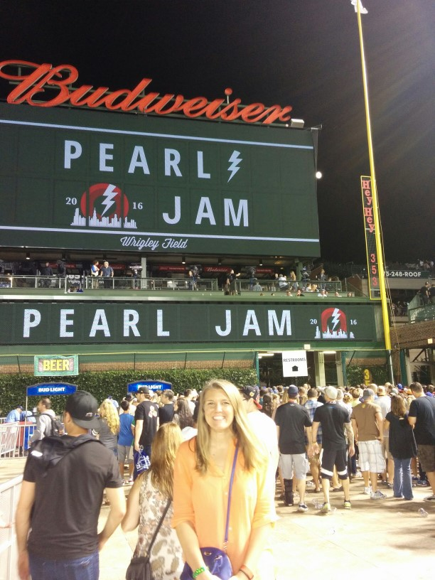
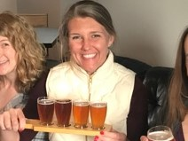
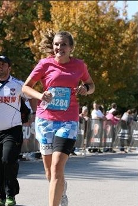
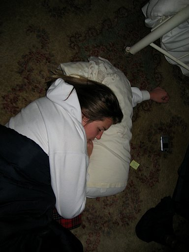

Pearl Jam
Pearl Jam is one of my favorite bands. I have seen them perform live in concert 14 times. I have travelled to 8 different cities for shows. Every show is a new experience because the setlists are always changing!
Craft Beer
What once was an innocent curiousity has turned into a major component of my life. I'll stand in line early in the morning for the chance to buy a new beer being released or spend hours in a park sampling beers at a festival. I have made many new friends through our shared love of beer.
Running
While I don't consider myself an athlete per say, I enjoy running. I started running because a friend suggested it would be a good way to get in shape for a beach vacation we had coming up. I've run more races than I can count ranging from one‑mile to full marathons. In 2014, I ran the New York City Marathon.
Sleep
There really is no explanation needed. I can pretty much fall asleep anywhere!